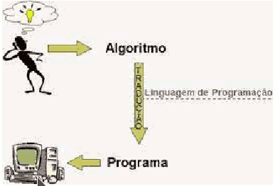

En matemáticas se define algoritmo de la siguiente manera:
En matemáticas, lógica, ciencias de la computación y disciplinas relacionadas, un algoritmo es un conjunto prescrito de instrucciones o reglas bien definidas, ordenadas y finitas que permite llevar a cabo una actividad mediante pasos sucesivos que no generen dudas a quien deba hacer dicha actividad. Dados un estado inicial y una entrada, siguiendo los pasos sucesivos se llega a un estado final y se obtiene una solución. A una misma entrada, siempre se obtiene la misma salida.
En términos de programación, un algoritmo es una secuencia de pasos lógicos que permiten solucionar un problema.
Los elementos clave de un algoritmo incluyen:
- Entrada : los algoritmos toman datos de entrada, que pueden ser valores numéricos, texto, imágenes u otros tipos de información necesarios para realizar una tarea.
- Procesamiento : los datos de entrada se manipulan y procesan mediante una secuencia de pasos definidos. Estos pasos pueden incluir operaciones matemáticas, comparaciones, toma
de decisiones y otras acciones específicas. - Salida : al final del proceso, un algoritmo produce resultados o datos de salida que representan el resultado de la tarea o el problema resuelto.
No hay que confundir algoritmo con programa informático. El algoritmo es la expresión teórica de lo que finalmente ejecutará en el ordenador el programa informático. Muchas veces, si el programa a resolver requiere una cierta dificultad, en un primer momento se especificará el algoritmo correspondiente y finalmente, a partir de este algoritmo se desarrollará el correspondiente programa en un determinado lenguaje de programación.

Una buena herramienta para la creación de algoritmos es PseInt.
Vídeos: https://www.youtube.com/watch?v=FvibfpSVFBw&list=PLAzlSdU-KYwXllXcUCW-BylQZemcDV798
Vamos a ver dos formas de definir algoritmos: Pseudocódigo y Ordinogramas.